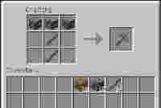

Minecraft is a 3D sandbox game that has no required goals to accomplish, allowing players a large amount of freedom in choosing how to play the game. However, there is an achievement system, known as "advancements" in the Java Edition and Bedrock Edition of the game, "trophies" on the PlayStation ports, and simply "achievements" on the Xbox ports. Gameplay is in the first-person perspective by default, but players have the option of a third-person perspective. The game world is composed of rough 3D objects—mainly cubes and fluids, and commonly called "blocks"—representing various materials, such as dirt, stone, ores, tree trunks, water, and lava. The core gameplay revolves around picking up and placing these objects. These blocks are arranged in a 3D grid, while players can move freely around the world. Players can "mine" blocks and then place them elsewhere, enabling them to build things. Many commentators have described the game's physics system as unrealistic. The game also contains a material called redstone, which can be used to make primitive mechanical devices, electrical circuits, and logic gates, allowing for the construction of many complex systems. The game world is virtually infinite and procedurally generated as players explore it, using a map seed that is obtained from the system clock at the time of world creation (or manually specified by the player). There are limits on vertical movement, but Minecraft allows an infinitely large game world to be generated on the horizontal plane. Due to technical issues when extremely distant locations are reached, however, there is a barrier preventing players from traversing to locations beyond 30 million blocks from the centre. The game achieves this by splitting the world data into smaller 16 by 16 sections called "chunks" that are only created or loaded when players are nearby. The world is divided into biomes ranging from deserts to jungles to snowfields; the terrain includes plains, mountains, forests, caves, and bodies of water or lava. The in-game time system follows a day and night cycle, with one full cycle lasting for 20 real-time minutes. When starting a new world, players must choose one of five game modes, as well as one of four difficulties, ranging from "Peaceful" to "Hard". Increasing the difficulty of the game causes the player to take more damage from mobs (non-player characters), as well as having other difficulty-specific effects. For example, the Peaceful difficulty prevents hostile mobs from spawning, and the Hard difficulty allows players to starve to death if their hunger bar is depleted. Once selected, the difficulty can be changed, but the game mode is locked and can only be changed with cheats. New players are given a randomly selected default character skin out of 9 possibilities, including Steve or Alex, but the option to create custom skins was made available in 2010. Players encounter various mobs, such as animals, villagers, and hostile creatures. Passive mobs, such as cows, pigs, and chickens, can be hunted for food and crafting materials. They spawn in the daytime, while hostile mobs—including large spiders, skeletons, and zombies—spawn during night-time or in dark places such as caves. Some hostile mobs, such as zombies, skeletons and drowned (underwater versions of zombies), burn under the sun if they have no headgear. Other creatures unique to Minecraft include the creeper (an exploding creature that sneaks up on the player) and the enderman (a creature with the ability to teleport as well as pick up and place blocks). There are also variants of mobs that spawn in different conditions; for example, zombies have husk and drowned variants that spawn in deserts and oceans, respectively.
